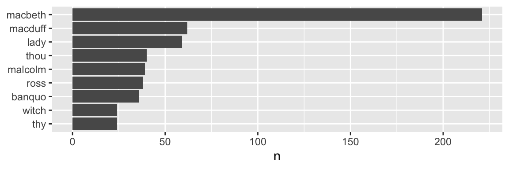
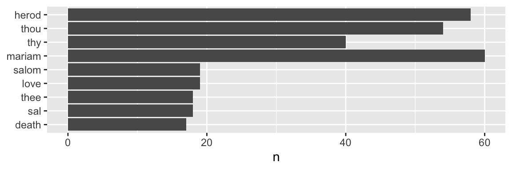
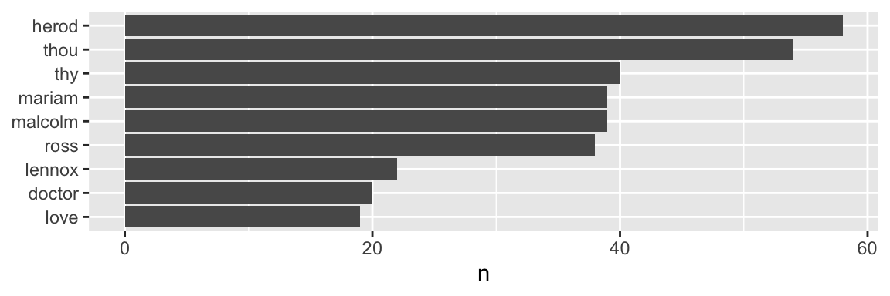
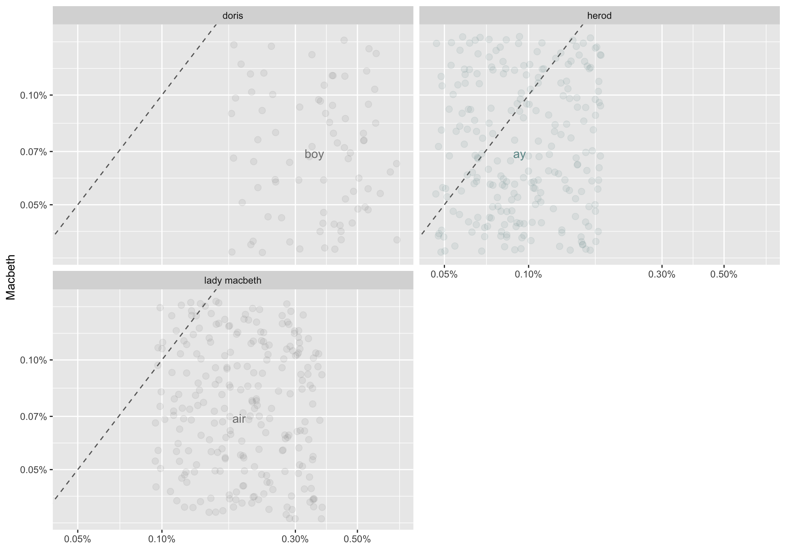

April 20, 2023
For my third and final RMIT Data Wrangling assignment, we had to compare two datasets with some exploratory analysis. Having done a little mixed-methods research at KPMG with NVivo, but no text analysis in Python or R as yet,I chose two texts as my datasets. Or to be specific, two plays: Macbeth by William Shakespeare and The Tragedie of Mariam, faire queene of Jewry by Elizabeth Carey, both 16-17th century contemporaries.
Approaching it from the place of the play being a “dataset” and how to fit it to Tidy Data principles, helped identify variables, values (words) and factors, such as title, gender, characters and acts/scenes (which were out of my scope here due to time and space). I’m increasingly thinking of how things would be broken down similarly in other everyday situations.
One challenge I identify is that the language of both writers is quite different in spelling - to progress beyond the scope of this report would require this to be addressed for proper comparison. Though even in this preliminary form, I believe there are some potentially interesting insights. Overall, it was a fascinating shift of thinking, applying familiar skills with a different approach.
Below is the R code used for the data wrangling, transformation, analysis and visualisations.
# load all required packages
library(gutenbergr)
library (readr)
library(here)## here() starts at /Users/adam/data/R/Github Projects/adam-tuoa.github.iolibrary(dplyr)##
## Attaching package: 'dplyr'## The following objects are masked from 'package:stats':
##
## filter, lag## The following objects are masked from 'package:base':
##
## intersect, setdiff, setequal, unionlibrary(magrittr)
library(tidyr)##
## Attaching package: 'tidyr'## The following object is masked from 'package:magrittr':
##
## extractlibrary(tidytext)
library(stringr)
library(ggplot2)
library(scales)##
## Attaching package: 'scales'## The following object is masked from 'package:readr':
##
## col_factor# Set maximum number for printing
options(max.print=50)For this project, two texts will be processed in preparation for a comparative text analysis with consideration of gender. The two plays are by 17th century contemporaries. One is considered “the greatest dramatist of all time as well as the most influential writer in the history of the English language” (EB 2020), while the other never saw her play performed in her lifetime, she does have the distinction of having written the first known play published by a woman (Braganza 2022). And both plays happen to involve murderous royalty.
The intended result of this process will be a dataset that combines the text from both plays in a Tidy Data format, ready for exploratory data analysis.
The preparation will identify variables for extraction, creation or transformation. With gender as a key focus, the variables will be selected for aiding the focus of the analysis.
Use Project Gutenberger R library to identify and access Macbeth:
# Find Project Gutenberger ID for Macbeth
gutenberg_works() %>%
filter(title == "Macbeth")## # A tibble: 1 × 8
## gutenberg_id title author gutenberg_author_id language gutenberg_bookshelf
## <int> <chr> <chr> <int> <chr> <chr>
## 1 1533 Macbeth Shakesp… 65 en Opera
## # ℹ 2 more variables: rights <chr>, has_text <lgl># Download MacBeth
macbeth <-gutenberg_download(1533, mirror = "http://aleph.gutenberg.org")
# Check dataset
macbeth %>% head()## # A tibble: 6 × 2
## gutenberg_id text
## <int> <chr>
## 1 1533 "cover "
## 2 1533 ""
## 3 1533 ""
## 4 1533 ""
## 5 1533 ""
## 6 1533 "MACBETH"This is just the beginning of the play’s text, so let’s check further down:
# View random six rows
macbeth[2001:2006, ]## # A tibble: 6 × 2
## gutenberg_id text
## <int> <chr>
## 1 1533 "But who did bid thee join with us?"
## 2 1533 ""
## 3 1533 "THIRD MURDERER."
## 4 1533 "Macbeth."
## 5 1533 ""
## 6 1533 "SECOND MURDERER."“The Tragedie of Mariam, the faire queene of Jewry” - let’s use Mariam - check Project Gutenberger access:
# Find Project Gutenberger ID for Mariam
gutenberg_works() %>%
filter(title == "The Tragedie of Mariam, the faire queene of Jewry")## # A tibble: 0 × 8
## # ℹ 8 variables: gutenberg_id <int>, title <chr>, author <chr>,
## # gutenberg_author_id <int>, language <chr>, gutenberg_bookshelf <chr>,
## # rights <chr>, has_text <lgl>So, that confirms it is not in the Project Gutenberger library.
Fortunately, it is publicly available on the web courtesy of A Celebration of Women Writers, the result of work by Laura June Dziuban and Mary Mark Ockerbloom. From this site, I copied and pasted the entire text into a plain text document (CSV).
# Load Mariam
mariam <- read_csv("The Tragedie of Mariam.csv", show_col_types = FALSE)## Warning: One or more parsing issues, call `problems()`
## on your data frame for details, e.g.:
## dat <- vroom(...)
## problems(dat)# Check dataset
mariam %>% head()## # A tibble: 6 × 1
## `A Celebration of Women Writers`
## <chr>
## 1 The tragedie of Mariam, the faire queene of Jewry: written by that learned, v…
## 2 THE
## 3 TRAGEDIE
## 4 OF MARIAM,
## 5 THE FAIRE
## 6 Queene of Jewry.Ignoring that warning for now, which is likely identified later, let’s have a look further down the text:
# View random six rows
mariam[2001:2006, ]## # A tibble: 6 × 1
## `A Celebration of Women Writers`
## <chr>
## 1 In base revenge there is no honor wonne.
## 2 Who would a worthy courage overthrow,
## 3 And who would wrastle with a worthles foe?
## 4 We say our hearts are great and cannot yeeld,
## 5 Because they cannot yeeld it proves them poore:
## 6 Great hearts are task't beyond their power, but feldNow the plays are loaded, before merging them it will be necessary to inspect each dataset more carefully and ensure that data from each play will be identifiable as such.
To start, let’s look at the overall dimensions and structure in terms of variables and data types.
From here on, Macbeth and Mariam will refer to the
plays; macbeth and mariam for their respective
datasets.
# Dimensions of each dataset
cat("macbeth:\n")## macbeth:macbeth %>% dim()## [1] 4168 2cat("\nmariam:\n")##
## mariam:mariam %>% dim()## [1] 2335 1# Structure of each dataset
cat("macbeth:\n")## macbeth:macbeth %>% str()## tibble [4,168 × 2] (S3: tbl_df/tbl/data.frame)
## $ gutenberg_id: int [1:4168] 1533 1533 1533 1533 1533 1533 1533 1533 1533 1533 ...
## $ text : chr [1:4168] "cover " "" "" "" ...cat("\nmariam:\n")##
## mariam:mariam %>% str()## spc_tbl_ [2,335 × 1] (S3: spec_tbl_df/tbl_df/tbl/data.frame)
## $ A Celebration of Women Writers: chr [1:2335] "The tragedie of Mariam, the faire queene of Jewry: written by that learned, vertuous, and truly noble ladie, E."| __truncated__ "THE" "TRAGEDIE" "OF MARIAM," ...
## - attr(*, "spec")=
## .. cols(
## .. `A Celebration of Women Writers` = col_character()
## .. )
## - attr(*, "problems")=<externalptr>That’s an initial overview - now for a look at each in turn in more detail.
From above, we can see that macbeth has two
variables:
gutenberg_id - numerical (integer)text - character/stringThe first identifies the play, while the second is the play’s text split by line into 4168 rows.
Here are the attributes of the macbeth dataset,
confirming we are working with a tibble class dataframe
macbeth %>% attributes()## $class
## [1] "tbl_df" "tbl" "data.frame"
##
## $row.names
## [1] 1 2 3 4 5 6 7 8 9 10 11 12 13 14 15 16 17 18 19 20 21 22 23 24 25
## [26] 26 27 28 29 30 31 32 33 34 35 36 37 38 39 40 41 42 43 44 45 46 47 48 49 50
## [ reached getOption("max.print") -- omitted 4118 entries ]
##
## $names
## [1] "gutenberg_id" "text"From above (2.0), we can see that Mariam has one variable:
A Celebration of Women Writers - character/string
typeThis single column contains the play’s text split by line into 2335 rows.
Here are the attributes of the macbeth dataset. As it
has been created by readr::read_csv, it is a
spec_tbl_df which has additional specification. For all
intents and purposes this has no impact on our use of this tibble
subclass. It will become moot upon merging of the two datasets anyway.
And we will get to that problem.
mariam %>% attributes()## $row.names
## [1] 1 2 3 4 5 6 7 8 9 10 11 12 13 14 15 16 17 18 19 20 21 22 23 24 25
## [26] 26 27 28 29 30 31 32 33 34 35 36 37 38 39 40 41 42 43 44 45 46 47 48 49 50
## [ reached getOption("max.print") -- omitted 2285 entries ]
##
## $names
## [1] "A Celebration of Women Writers"
##
## $spec
## cols(
## `A Celebration of Women Writers` = col_character()
## )
##
## $problems
## <pointer: 0x7f98b00a94a0>
##
## $class
## [1] "spec_tbl_df" "tbl_df" "tbl" "data.frame"From these outputs on macbeth and mariam,
it confirms the above in terms of size, variable names and that they are
indeed of dataframe format, more specifically a tibble and tibble
subclass (spec_tbl_df) respectively. Though
mariam is lacking an identifier column, as well as column
names/headers.
Curiously, this section was added later in the process, but is a necessary step right now in the process, in order to make things easier later on.
For the purposes of ascribing gender to the use of each word, a variable based on the character’s names will be created. The initial formatting - uppercase and punctuation - of both works makes it possible to differentiate speakers/characters from the use of their names in speech.
# Character names
macbeth_names = c("DUNCAN", "MALCOLM", "DONALBAIN","MACBETH", "BANQUO", "MACDUFF","LENNOX", "ROSS", "MENTEITH", "ANGUS", "CAITHNESS", "FLEANCE", "SIWARD", "YOUNG SIWARD", "SEYTON", "BOY", "DOCTOR", "SOLDIER", "PORTER", "OLD MAN", "MESSENGER", "FIRST MESSENGER", "SECOND MESSENGER","LORDS", "LADY MACBETH", "LADY MACDUFF", "GENTLEWOMAN", "HECATE", "FIRST WITCH", "SECOND WITCH", "THIRD WITCH")
# For Mariam's characters, I opted for this route on this occasion, though I see how regex would excel here - next time!
mariam_names = list(c("Herod\\.", "Her\\."),
c("Doris\\.", "Dor\\."),
c("Mariam\\.","Ma\\.", "Mar\\."),
c("Salome\\.", "Sal\\.", "Salom\\.", "Salo\\."),
c("Antipater\\.", "Antipat\\."),
c("Alexander\\.", "Alex\\."),
c("Sillius\\.", "Sil\\.", "Sille\\."),
c("Constabarus\\.", "Con\\."),
c("Pheroras\\.", "Phero\\.", "Pheror\\."),
c("Graphina\\.", "Graph\\."),
c("Babus first Sonne\\.", "Babus\\. I\\. Sonne\\.", "Ba\\. 1\\. Sonne"),
c("Babus second Sonne\\.", "Babus 2\\. Sonne\\.", "Ba\\. 2\\. Sonne"),
c("Annanell\\.", "Ananell\\.", "Ana\\."),
c("Sohemus\\.", "Sohem\\."),
c("Nuntio\\.", "Nunti\\.", "Nun\\."),
c("Bu\\."),
c("Chorus\\."))# Function to add character name for Macbeth
add_macbeth_character <- function(dataframe, names)
{ dataframe$character <- NA
for(name in names)
{ dataframe$character[grepl(name, dataframe$text)] <- name }
dataframe }
# Function to add character name for Mariam - Loops through the variations present, filling with the full name.
add_mariam_character <- function(dataframe, names_vector)
{ dataframe$character <- NA
for (element in names_vector)
{ for (names in element)
{ dataframe$character[grepl(names, dataframe[[1]])] <- element[1] } }
dataframe }# Create new column with character names corresponding to any line (row) they appear in
macbeth <- add_macbeth_character(macbeth, macbeth_names)
mariam <- add_mariam_character(mariam, mariam_names)What has just been done is the creation of a new
character name column, corresponding to any row where the
correctly formatted character name has been added. Now, what remains to
be done is “fill down” for each name found in this new column - with
some cleaning required of the character names in
mariam.
macbeth %<>% fill(character)
mariam %<>% fill(character)
#remove unwanted characters - ie "\."
mariam[[2]] %<>% str_remove_all("[:punct:]")Please note, due to the method I have used, there is a small degree of inaccuracy introduced due to incorrect attribution of a speaker to general transitional instructions, scene changes, personnel and the like. For this project it was deemed prudent to focus on the core priorities. This can be easily addressed as required in the future.
To merge the files, all text will be combined into a single column, or variable. Though for comparative analysis after pre-processing, the ability to identify the two plays will be required through assignment to a new categorical variable
In macbeth the gutenberg_id variable is
currently numerical, but is only significant as an identifier. A quick
check of unique values for the variable shows this to be the case.
macbeth$gutenberg_id %>% unique()## [1] 1533What is required is for either this column to be replicated in
mariam or to remove it and create a new identifier variable
for both datasets. In the end, the result will be the same: a new column
with two values corresponding to the title of each play.
To be clean about it - let’s remove the gutenberg_id
column and create a new column for each dataset. Then a straightforward
join by stacking one dataset on top of the other (row binding) will
result in our merged dataset.
An added line_number column will be added so that
cross-referencing with the original text sources can be easily done.
From 2.2, it was noted mariam requires a column name
change. This will be rectified now also.
# Remove unnecessary column (by "unselecting" it)
macbeth %<>% select (-1)
# Add new columns with titles and line numbers for values
macbeth$title <- "Macbeth"
mariam$title <- "The Tragedie of Mariam"
macbeth %<>% mutate(line_number = row_number())
mariam %<>% mutate(line_number = row_number())
# Rename column name
mariam %<>% rename("text"="A Celebration of Women Writers")And now joining the two datasets together:
df <- rbind(macbeth, mariam) %>% select("title", "text", "character", "line_number")A quick check of the top and and tail of the dataset should show text from both plays:
# show top and tail of the merged dataset
df %>% head()## # A tibble: 6 × 4
## title text character line_number
## <chr> <chr> <chr> <int>
## 1 Macbeth "cover " <NA> 1
## 2 Macbeth "" <NA> 2
## 3 Macbeth "" <NA> 3
## 4 Macbeth "" <NA> 4
## 5 Macbeth "" <NA> 5
## 6 Macbeth "MACBETH" MACBETH 6df %>% tail()## # A tibble: 6 × 4
## title text character line_number
## <chr> <chr> <chr> <int>
## 1 The Tragedie of Mariam "In after times the schoole of w… Chorus 2330
## 2 The Tragedie of Mariam "FINIS." Chorus 2331
## 3 The Tragedie of Mariam "About This Edition" Chorus 2332
## 4 The Tragedie of Mariam "The original spelling of the te… Chorus 2333
## 5 The Tragedie of Mariam "This book has been put on-line … Chorus 2334
## 6 The Tragedie of Mariam "Edited by Mary Mark Ockerbloom" Chorus 2335NOTE - it is not visible in the PDF report, but rest assured the tail shows two columns also.
From manual inspection, there is extraneous text data before and after the actual play text. For purposes of expediency and given it is only four points to identify, this identification was done manually to obtain the row numbers for deletion.
# Remove Macbeth intro
df <- df[-(1:92),]
# Remove Mariam outro
df <- df[-(6388:6391),]
# Remove Macbeth end and Mariam intro
df <- df[-(4057:4197),]We have our merged dataset containing the complete texts of Macbeth and The Tragedie of Mariam, a tibble of 4 columns and 6266 rows.
Now, let’s begin the real fun!
The dataset requires further manipulation to obtain the desired result.
Firstly, we need to conform the data to Tidy Data principles as it fails to comply in its current state. Only one of the three principles are satisfied:
But, the text column contains combinations of values
rather than each having their own cell. Each value needs to be a single
word only, corresponding to the observation of said value.
[NOTE: I did get this wrong in the video - this has been updated since that recording]
Tokenisation will be the method used to achieve this.
# Tokenise the text column and return a new dataframe with each word in its own cell
df_token <- df %>% unnest_tokens(word, text)
# convert character to lower case
df_token$character %<>% str_to_lower()
df_token %>% str()## tibble [35,469 × 4] (S3: tbl_df/tbl/data.frame)
## $ title : chr [1:35469] "Macbeth" "Macbeth" "Macbeth" "Macbeth" ...
## $ character : chr [1:35469] "hecate" "hecate" "hecate" "hecate" ...
## $ line_number: int [1:35469] 94 94 94 94 94 94 94 94 94 94 ...
## $ word : chr [1:35469] "scene" "in" "the" "end" ...df_token %>% head()## # A tibble: 6 × 4
## title character line_number word
## <chr> <chr> <int> <chr>
## 1 Macbeth hecate 94 scene
## 2 Macbeth hecate 94 in
## 3 Macbeth hecate 94 the
## 4 Macbeth hecate 94 end
## 5 Macbeth hecate 94 of
## 6 Macbeth hecate 94 thedf_token %>% tail()## # A tibble: 6 × 4
## title character line_number word
## <chr> <chr> <int> <chr>
## 1 The Tragedie of Mariam chorus 2334 ockerbloom
## 2 The Tragedie of Mariam chorus 2335 edited
## 3 The Tragedie of Mariam chorus 2335 by
## 4 The Tragedie of Mariam chorus 2335 mary
## 5 The Tragedie of Mariam chorus 2335 mark
## 6 The Tragedie of Mariam chorus 2335 ockerbloomWe have a tidy tibble with 35469 words, complete with removal of all additional punctuation and conversion of all words to lower case.
Now to create additional variables by extracting them from data variable we have so far - and we’ve done one already!
The endpoint of this pre-processing is being able to ascribe gender to each observation. For this it will be necessary to identify the speaker. It was at this point I realised that generating the character variable would be far easier prior to tokenisation and even before joining the two initial datasets. Section 2.2.1 is where I travelled back in time to insert the creation of the character variable into this process.
Creating the gender category is based on indications from the introduction for each play. Without intent to offend or exclude, a binary approach has been taken for this report’s categorisation.
# Identify characters
male_chars <- c("duncan", "malcolm", " donalbain", " macbeth", " banquo", " macduff", "lennox", "ross", " menteith", "angus", "caithness", "fleance", "siward", "young siward", "seyton", "boy", "doctor", "soldier", "porter", "old man", "messenger", "first messenger", "second messenger", "lords", "herod", "antipater", "sillius", "constabarus", "pheroras", "babus first sonne", "babus second sonne", "annanell", "sohemus", "nuntio", "bu")
female_chars <- c("lady macbeth", "lady macduff", "gentlewoman", "hecate", "first witch", "second witch", "third witch", "doris", "mariam", "salome", "alexander", "graphina")
undefined <- c("chorus")
# Create a new column and fill when matches with character name
df_token %<>% mutate(gender = case_when(character %in% male_chars ~ "male",
character %in% female_chars ~ "female",
TRUE ~ "undefined")) %>%
select("title", "word", "character", "gender", "line_number")For the categorical variables - title,
character, gender - these will be converted to
factors, which will aid further analysis and visualisation.
#Convert to factors
df_token$title <- as.factor(df_token$title)
df_token$character <- as.factor(df_token$character)
df_token$gender <- as.factor(df_token$gender)Things are now in a Tidy Data format with primary variables sorted as correct data types. Next to check the values themselves.
A check for NA values shows no missing values.
# Check for NA values
colSums(is.na(df_token))## title word character gender line_number
## 0 0 0 0 0Double-checking factors are correct:
for (variable in c("title", "character", "gender"))
{
cat(paste(variable, ":\n"))
cat(levels(df_token[[variable]]))
cat("\n\n")
}## title :
## Macbeth The Tragedie of Mariam
##
## character :
## alexander angus annanell antipater babus first sonne babus second sonne banquo bu caithness chorus constabarus doctor donalbain doris duncan first witch fleance gentlewoman graphina hecate herod lady macbeth lady macduff lennox lords macbeth macduff malcolm mariam menteith messenger nuntio old man pheroras porter ross salome second witch seyton sillius siward sohemus soldier third witch young siward
##
## gender :
## female male undefinedThere will be no great benefit in checking for spelling errors given the nature of the old style of English, especially with Mariam, which also has a “flexible” approach to spelling anyway. This difference in language will impact some conventional text analysis techniques without further transformation of the data, such as lemmatisation, or converting to modern spelling, both of which are beyond the scope of this report.
A final scan to remove noise in the way of removing whitespace, removal/replacement of unnecessary characters/outliers.
# Remove whitespace (it changes to a Large list, so convert back to tibble)
df_token %<>% lapply(str_trim) %>% as_tibble()
# Checking for any words that begin and/or end with non alphanumeric characters
df_check_start <- df_token[str_detect(df_token$word, "^[^A-Za-z]|^[^A-Za-z]$|^[A-Za-z]$"), ] %>% select("word")
df_check_end <- df_token[str_detect(df_token$word, "$[^A-Za-z]$"), ] %>% select("word")
# print list of relevant values
cat(paste("Begins/ends with non-alpha:\n", unique(df_check_start)))## Begins/ends with non-alpha:
## c("i", "_exeunt", "a", "o", "_exit", "_tiger", "_drum", "_witches", "_aside", "_to", "_flourish", "v", "_a", "_within", "_looking", "_knocking", "_opens", "_alarum", "_lady", "c", "_assaults", "_dies", "_ghost", "_music", "t", "_thunder", "_descends", "_hautboys", "_stabbing", "_they", "2", "1", "3", "4", "5", "6", "7", "8", "æthiopian", "s", "j", "u", "w")A few things to address:
read_csv.# Remove "_"
df_token$word %<>% str_remove_all("[:punct:]")
# Standardise spelling to avoid possible confusion
df_token$word %<>% str_replace_all("æthiopian", "ethiopian")
# Remove numbers
df_token$word %<>% str_remove_all("^[:digit:]$")For considering word frequency, a good practice is to remove “stopwords”, which are a group of commonly used words - “a”, “the”, “but”, “about” - that when removed can help reduce the level of noise to reveal those more meaningful words.
At this step, stopwords will be removed and then the dataframe regrouped to get the frequency for each word:
df_no_stopwords <-
df_token %>%
filter(!df_token$word %in% stop_words$word) %>%
count(title, word, gender, character) %>%
arrange(desc(n))
df_no_stopwords## # A tibble: 10,210 × 5
## title word gender character n
## <chr> <chr> <chr> <chr> <int>
## 1 Macbeth macbeth undefined macbeth 158
## 2 Macbeth macbeth female lady macbeth 63
## 3 Macbeth macduff undefined macduff 62
## 4 Macbeth lady female lady macbeth 59
## 5 The Tragedie of Mariam herod male herod 58
## 6 The Tragedie of Mariam thou male herod 54
## 7 Macbeth thou undefined macbeth 40
## 8 The Tragedie of Mariam thy male herod 40
## 9 Macbeth malcolm male malcolm 39
## 10 The Tragedie of Mariam mariam male herod 39
## # ℹ 10,200 more rowsThis has reduced the overall number of rows to 10210 though keep in mind a word may be in more than one row in this dataframe relating to different instances of title, gender and character.
The most frequent word in this list is “Macbeth” connected to
“Macbeth. This highlights a flaw in my methodology for creating the
character variable based on the appearance of the
character’s name in the text (albeit in capitalised form in the first
instance). This number (n) will include all of the matched instances
referring to Macbeth’s lines.
Another issue of note is the presence of Old English words like “thou” and “thy”. In modern English, “you” and “your” would be removed by a regular stopwords list, but they do not account for Old English. Compounding the issue, is the fact that Cary’s approach to spelling might be described as flexible at best. Further work could be undertaken to address these issues to standardise the texts (as one option).
So, irrespective of these foreseeable and rectifiable flaws, the dataset is prepared for exploring word frequency in regard to comparison by title, gender and/or character.
# Function - plot word freq, with argument to vary minimum number
barplot_word_freq <- function (dataframe, num=30)
{ dataframe %>% filter(n > num) %>%
mutate(word = reorder(word, n)) %>%
ggplot(aes(n, word)) +
geom_col() +
labs(y = NULL) }df_no_stopwords %>%
filter (title == "Macbeth") %>%
barplot_word_freq(22)
df_no_stopwords %>%
filter (title == "The Tragedie of Mariam") %>%
barplot_word_freq(16)
df_no_stopwords %>%
filter (gender == "male") %>%
barplot_word_freq(18)
df_no_stopwords %>%
filter (gender == "female") %>%
barplot_word_freq(15)Now, considering the potential to compare word frequency by proportion
Creating functions for creating table and scatter plotting:
#compare_character_word_freq <- function(characters)
word_frequency_compare <- function (dataframe, characters)
{ frequency <- dataframe %>%
filter (character %in% characters) %>%
mutate(word = str_extract(word, "[a-z']+")) %>%
count(character, word) %>%
group_by(character) %>%
mutate(proportion = n / sum(n)) %>%
select(-n) %>%
pivot_wider(names_from = character, values_from = proportion) %>%
pivot_longer(pivot_pair[1]:pivot_pair[2],
names_to = "character", values_to = "proportion")
}plot_frequency_compare <- function (dataframe, y_character, pivot_pair)
{ ggplot(dataframe, aes(x = proportion, y = dataframe[[y_character]],
color = abs(dataframe[[y_character]] - proportion))) +
geom_abline(color = "gray40", lty = 2) +
geom_jitter(alpha = 0.1, size = 2.5, width = 0.3, height = 0.3) +
geom_text(aes(label = word), check_overlap = TRUE, vjust = 1.5) +
scale_x_log10(labels = percent_format()) +
scale_y_log10(labels = percent_format()) +
scale_color_gradient(limits = c(0, 0.001),
low = "darkslategray4", high = "gray75") +
facet_wrap(~ character, ncol = 2) +
theme(legend.position="none") +
labs(y = "Macbeth", x = NULL)
}All words (including stopwords)
characters <- c("lady macbeth", "doris", "macbeth", "herod")
y_character <- c("macbeth")
pivot_pair <- c("lady macbeth", "doris")
df_token %>%
word_frequency_compare(characters) %>%
plot_frequency_compare(y_character, pivot_pair)## Warning: Use of `dataframe[[y_character]]` is
## discouraged.
## ℹ Use `.data[[y_character]]` instead.
## Use of `dataframe[[y_character]]` is
## discouraged.
## ℹ Use `.data[[y_character]]` instead.
## Use of `dataframe[[y_character]]` is
## discouraged.
## ℹ Use `.data[[y_character]]` instead.
## Use of `dataframe[[y_character]]` is
## discouraged.
## ℹ Use `.data[[y_character]]` instead.## Warning: Removed 7786 rows containing missing values
## (`geom_point()`).## Warning: Removed 7786 rows containing missing values
## (`geom_text()`).With stopwords removed
characters <- c("lady macbeth", "doris", "macbeth", "herod", "banquo")
y_character <- c("macbeth")
pivot_pair <- c("lady macbeth", "doris")
df_no_stopwords %>%
word_frequency_compare(characters) %>%
plot_frequency_compare(y_character, pivot_pair)## Warning: Use of `dataframe[[y_character]]` is
## discouraged.
## ℹ Use `.data[[y_character]]` instead.
## Use of `dataframe[[y_character]]` is
## discouraged.
## ℹ Use `.data[[y_character]]` instead.
## Use of `dataframe[[y_character]]` is
## discouraged.
## ℹ Use `.data[[y_character]]` instead.
## Use of `dataframe[[y_character]]` is
## discouraged.
## ℹ Use `.data[[y_character]]` instead.## Warning: Removed 7552 rows containing missing values
## (`geom_point()`).## Warning: Removed 7552 rows containing missing values
## (`geom_text()`).
An example of the dataset being used for generating ngrams - groups of n words appearing together. Here is a function to generate them based on n words:
#Function - create ngram of different numbers
create_ngrams <- function (dataframe, n=2)
{ dataframe %>% unnest_tokens(output = "words",
input = text,
token = "ngrams",
n = n) } Creating bigrams (words in pairs):
df_bigrams <- create_ngrams(df, 2)
df_bigrams %>% head()## # A tibble: 6 × 4
## title character line_number words
## <chr> <chr> <int> <chr>
## 1 Macbeth HECATE 93 <NA>
## 2 Macbeth HECATE 94 scene in
## 3 Macbeth HECATE 94 in the
## 4 Macbeth HECATE 94 the end
## 5 Macbeth HECATE 94 end of
## 6 Macbeth HECATE 94 of theFrequency of bigrams for Macbeth:
df_bigrams %>%
filter(!df_bigrams$words %in% stop_words$word) %>%
filter (title == "Macbeth") %>%
count(title, words) %>%
arrange(desc(n)) %>%
head()## # A tibble: 6 × 3
## title words n
## <chr> <chr> <int>
## 1 Macbeth <NA> 1433
## 2 Macbeth lady macbeth 70
## 3 Macbeth i have 40
## 4 Macbeth in the 36
## 5 Macbeth to the 35
## 6 Macbeth of the 30Frequency of bigrams for Mariam:
df_bigrams %>%
filter(!df_bigrams$words %in% stop_words$word) %>%
filter (title == "The Tragedie of Mariam") %>%
count(title, words) %>%
arrange(desc(n)) %>%
head()## # A tibble: 6 × 3
## title words n
## <chr> <chr> <int>
## 1 The Tragedie of Mariam to be 37
## 2 The Tragedie of Mariam i will 20
## 3 The Tragedie of Mariam i am 19
## 4 The Tragedie of Mariam it is 19
## 5 The Tragedie of Mariam my heart 19
## 6 The Tragedie of Mariam <NA> 18Note - these are tested with the pre-tokenised dataframe
(df), which explains the null values, as well as the
outlier value for “lady macbeth”. To address this, the dataframe will
need to be processed slightly differently, though largely a matter of
changing the order, not the methods.
I went into this project with the intention of presenting myself a challenge but was unsure of the direction to go. Two things helped clarify my decision to undertake this text-based project:
I started with Shakespeare’s Macbeth as a seemingly obvious start - available, significant and a work I am familiar with in a range of variations, including an Australian rock opera and Akira Kurosawa’s adaptation in Throne of Blood. I had thought to do another of Shakespeare’s works, but then I wondered: might there be a female author who was a contemporary of Shakespeare’s? And certainly, there was: Elizabeth Cary, who may be less well-known but not without her own significance as the first known published female playwright, with a work coincidentally with similar themes to Macbeth. This helped meaningfully underpin the project’s concept to be the foundation for a gender-focused comparative text analysis of the two works.
At first, I scribbled and sketched out possibilities for different features and how they could be used for analytical purposes, with consideration for the assignment’s requirements. The latter was helpful in pushing me in directions I may have not explored otherwise.
I’m learning that RMarkdown offers an easy way to create a framework for a project with flexibility to adapt - Jupyter Notebook also, though with differences. Starting with the template as a helpful base, I populated the document with my questions, aims, tasks and ideas which helped give focus and direction when straying down coding tunnels.
This was a good example of the 80/20 rule - I’m sure I spent all of that 80% and more on the cleaning/wrangling side of things, though the focus here is on the pre-processing anyway. At first, it felt it may be on the easy side in some ways; how hard can it be to start with only two columns in the beginning? But yes, it’s all about what features are waiting to be extracted from the data.
I was confused by the spec_tbl_df subclass of tibble
generated by reading in Mariam, and unsure of what problem
there might be from the CSV file reading. It was all fine in the end,
but it showed the importance of checking not just shape and size, but
also the nature of R objects. A problem did pop up after I used
str_trim which converted the tibble into a Large list,
though easily converted back again.
One thing I got stuck on was how to create the new character variable
and matching by name, especially for the mariam dataset. I
am unsure of why it was so difficult - I tried a range of functions and
approaches using group_by, mutate, filter, case_when,
various stringr functions such as str_detect, str_match and
so on, until finally finding a solution I could work with. One issue was
the need to deal with periods (“.”) but I wonder if it was the
spec_tbl_df subclass also? Anyway, I got there. A positive
learning outcome is that having a mindset based on knowing there
will be a solution makes it easier to keep looking for it.
My method of variable creation is unfortunately flawed by design. As
Iused the mention of each speaker from the original text to assign a new
variable in the same row, that means those mentions are included also as
words spoken by the speaker, incorrectly skewing their frequency of use.
With the limits of time for this report, I have not yet addressed this
issue, though I have considered potential solutions such as at the time
of creating the character variable, the corresponding
text value would be assigned a null value, making removal
easy through a filter process, using is.na for
instance.
My original design included extracting features based on the play
structure also, i.e. Acts and Scenes. Using something based on the
character variable extraction method, variables would be
created for both act and scene. This would
allow for a kind of time-based analysis for presence and participation
by character, and to consider the development or otherwise of language
as the play develops. And so on. Again, the scope on this occasion in
time and size meant curtailing my aspirations in order to present a
timely and focused report. But I’m excited for the possibilities of
these approaches to data that I am being opened up to.
Many and varied!! Trying to distill them into a few points:
At the end of this report, there is still work to be done, namely:
Though, I trust this project works as a “proof of concept”, offering the foundation for a gender-focused comparative analysis of the works by Shakespeare and Cary.
Main data source
Shakespeare W (1623) , Macbeth, Project Gutenberg. https://www.gutenberg.org/ebooks/1533
Cary E (1613) The Tragedie of Mariam, the faire queene of Jewry, A Celebration of Women Writers website, accessed 17 April 2023. https://digital.library.upenn.edu/women/cary/mariam/mariam.html
References
Agrawal R (14 June 2021) Must Known Techniques for text preprocessing in NLP, Analytics Vidhya website, accessed 18 April 2023. https://www.analyticsvidhya.com/blog/2021/06/must-known-techniques-for-text-preprocessing-in-nlp/
Braganza V (22 June 2022) 10 Women Writing in the Time of Shakespeare, website, accessed 17 April 2023. https://www.mentalfloss.com/posts/women-writers-contemporary-with-shakespeare
Dempsey M (7 May 2010) Regular expression “^[a-zA-Z]” or “[^a-zA-Z]”, Stack Overflow website, accessed 18 April 2023. https://stackoverflow.com/questions/2790813/regular-expression-a-za-z-or-a-za-z
Mowat B and Werstine P (n.d.) An Introduction to This Text: Macbeth, Folger Shakespeare Library website, accessed 17 April 2023. https://www.folger.edu/explore/shakespeares-works/macbeth/an-introduction-to-this-text
Silge J and Robinson S (2022) Text Mining with R, Text Mining with R website, accessed 17 April 2023. https://www.tidytextmining.com
Rydberg-Cox J (n.d.) Statistical Methods for Studying Literature Using R, Daedalus: Projects in Digital Humanities website, accessed 17 April 2023. https://www.chlt.org/StatisticalMethods/analyzing-literary-data.html
UQ (The University of Queensland) (6 April 2023) Text mining & text analysis, UQ website, accessed 17 April 2023. https://guides.library.uq.edu.au/research-techniques/text-mining-analysis/preparing-text-for-analysis
Tidyverse (27 December 2018) readr 1.3.1, Tidyverse website, accessed 17 April 2023. https://www.tidyverse.org/blog/2018/12/readr-1-3-1/
EB (Encyclopedia Britannica) (2020) (2 October 2020) William Shakespeare’s Important Works, EB website, accessed 18 April 2023. https://www.britannica.com/summary/William-Shakespeares-Important-Works
R packages
Johnston M, Robinson D (2022). gutenbergr: Download and Process Public Domain Works from Project Gutenberg. R package version 0.2.3. https://CRAN.R-project.org/package=gutenbergr.
Müller K (2020) here: A Simpler Way to Find Your Files, R package version 1.0.1. https://CRAN.R-project.org/package=here
Bache S, Wickham H (2022) magrittr: A Forward-Pipe Operator for R, R package version 2.0.3. https://CRAN.R-project.org/package=magrittr
Silge J, Robinson D (2016) tidytext: Text Mining and Analysis Using Tidy Data Principles in R. JOSS, 1(3). doi:10.21105/joss.00037 https://doi.org/10.21105/joss.00037
Wickham H (2022). stringr: Simple, Consistent Wrappers for Common String Operations, R package version 1.5.0. https://CRAN.R-project.org/package=stringr
Wickham H, François R, Henry L, Müller K, Vaughan D (2023) dplyr: A Grammar of Data Manipulation, R package version 1.1.0. https://CRAN.R-project.org/package=dplyr
Wickham H, Hester J, Bryan J (2023) readr: Read Rectangular Text Data, R package version 2.1.4. https://CRAN.R-project.org/package=readr
Wickham H, Seidel D (2022) scales: Scale Functions for Visualization. R package version 1.2.1. https://CRAN.R-project.org/package=scales.
Wickham H, Vaughan D, Girlich M (2023) tidyr: Tidy Messy Data, R package version 1.3.0. https://CRAN.R-project.org/package=tidyr
Wickham H. (2016) ggplot2: Elegant Graphics for Data Analysis, Springer-Verlag New York.
Yihui X (2023) knitr: A General-Purpose Package for Dynamic Report Generation in R, R package version 1.42.
Copyright © 2023 Adam Simmons, Inc. All rights reserved.